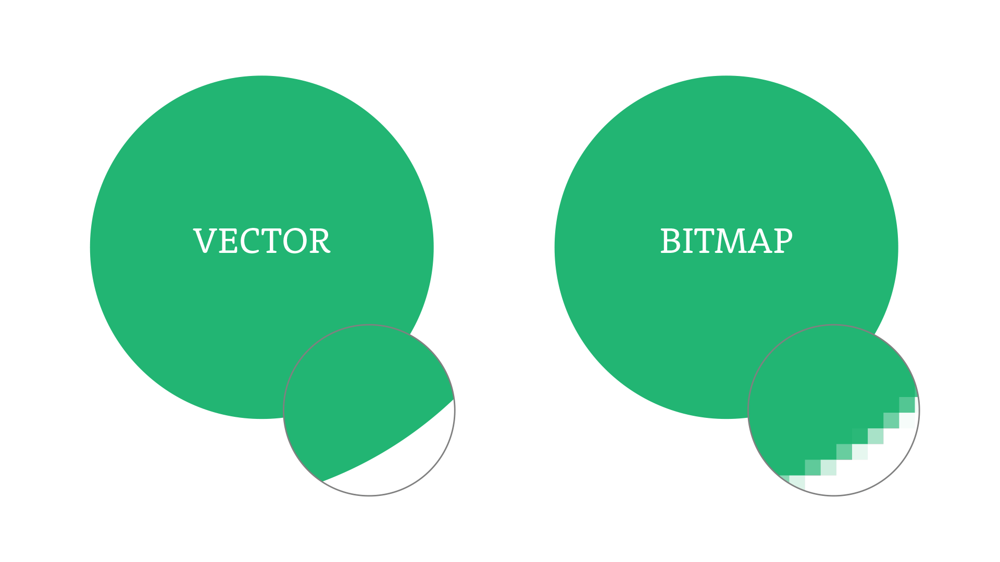

Om te voorkomen dat bestanden te veel ruimte innemen is compressie bedacht. Compressie verkleint de bestanden zodat ze niet meer zoveel ruimte in beslag nemen bij de opslag. Het voordeel hiervan is, is dat je meer kunt opslaan vergeleken zonder compressie. Er zijn twee soorten compressie: lossy compression en lossless compression.
Bij lossy compression wordt informatie van het origenele bestand aangepast en verwijderd, zodat het bewerkte bestand kleiner is dan het originele. Neem bijvoorbeeld een foto. Deze kan heel veel verschillende variaties van grijs hebben. Met compressie wordt dit één kleur grijs waardoor de bestandgrootte verminderd wordt. Het menselijke oog kan niet altijd onderscheidt tussen die kleuren maken, vooral als ze erop lijken. Door compressie kan de kwaliteit wel afnemen en als je een foto met veel verschillende kleuren hebt dan kan het door lossy compression er wel slechter uitzien. Een veelgebruikte methode om lossy compression te gebruiken is om van bijvoorbeeld een foto een JPEG bestand te maken. Deze verkleint het bestand automatisch doormiddel van lossy compression.
Je hebt ook nog lossless compression. Lossless compression is net als lossy compression een manier om bestanden te verkleinen. Het verschil bij lossless compression is alleen dat er geen informatie verloren gaat. Het bestand wordt alleen effectiever opgeslagen. Stel je hebt drie pixels naast elkaar met dezelfde waarde, dan zou je dat als (25,25,25) kunnen opschrijven, maar met lossless compression wordt dit (3,25). Deze manier van informatie opslaan kost duidelijk minder opslag en houdt tegelijkertijd de kwaliteit van het originele bestand. Wel is een lossless bestand van dezelfde afbeelding groter dan een lossy bestand van dezelfde afbeelding.
Een afbeelding kan 'gemaakt' zijn op twee manieren. De eerste manier van afbeelden is een bitmapafbeelding. Een bitmapafbeelding bestaat uit allemaal pixels die samen een beeld vormen. Het nadeel hiervan is, is dat wanneer je de afbeelding erg vergroot het beeld minder scherp word en er korrelig kan uitzien. De tweede manier van afbeelden is een vectorafbeelding. Een vectorafbeelding is gemaakt uit allemaal wiskundige formules die het beeld beschrijven en het laten afbeelden. Het voordeel van een vectorafbeelding tegenover een bitmapafbeelding is dat ook al zoom je in, het beeld blijft even scherp. Dit komt door de wiskundige formules die ook bij het inzoomen de juiste verhoudingen kunnen laten zien, waardoor ook het ingezoomde beeld scherp blijft.
Naast afbeeldingen of video's kunnen ook geluidsfragmenten verkleind worden. Als je met jouw mobiele data muziek wil gaan streamen, kan dit veel data kosten. Met compressie kan de data die verbruikt wordt erg worden verkleind. Een voorbeeld van hoe audio wordt opgeslagen is met een mp3 format. Mp3 is een lossy compression methode.
